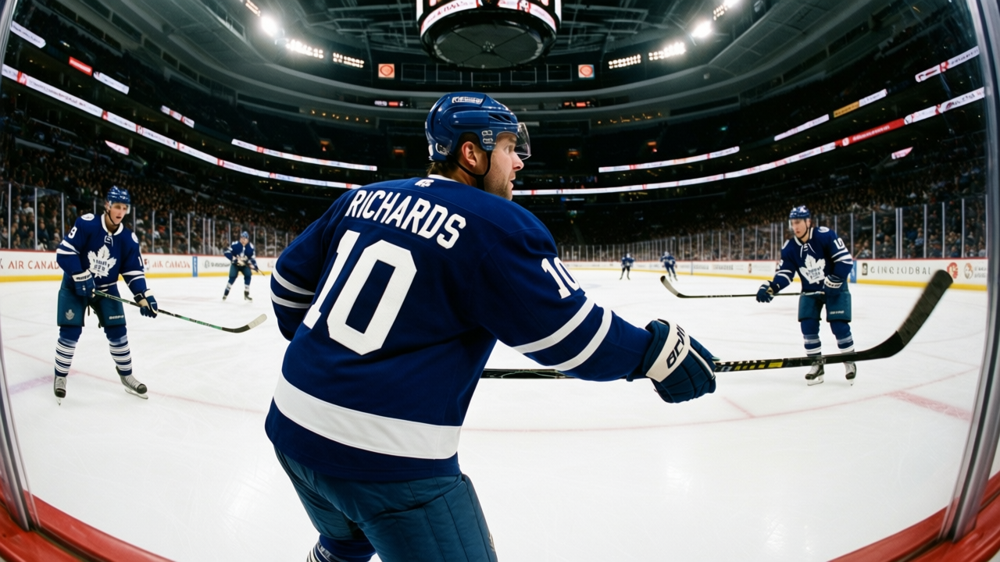

THE PANIC METER: code Green after the streak dies in overtime in Vancouver
Six straight wins ended on a coin flip in the extra frame, and the standings have not moved in a way that matters
 Frankie DanforthColumnist · Queen City Telegram
Frankie DanforthColumnist · Queen City Telegram
Code Green

The piece
The six-game run ended 5-4 in overtime at  Vancouver Canucks on December 31. Toronto took 20 shots, Vancouver 19. The game was a coin flip in the extra frame and the coin landed the wrong way. I slept fine.
Vancouver Canucks on December 31. Toronto took 20 shots, Vancouver 19. The game was a coin flip in the extra frame and the coin landed the wrong way. I slept fine.
The standings today:  Toronto Maple Leafs sits at 28-6-1, 63 points, 221 goals scored, 108 against.
Toronto Maple Leafs sits at 28-6-1, 63 points, 221 goals scored, 108 against.  Buffalo Sabres is second in the Northeast at 41 points with 36 games played. I will not do subtraction in a column. I will say this: 63 to 41 is not a race, and the one point from an overtime loss does not change that.
Buffalo Sabres is second in the Northeast at 41 points with 36 games played. I will not do subtraction in a column. I will say this: 63 to 41 is not a race, and the one point from an overtime loss does not change that.
The actual problem is Petr Chlup83. The 18-year-old centre landed on the injured list with an unspecified designation, onset between December 29 and January 1, return January 3. That is the road game at  New Jersey Devils. If he is not in the lineup,
New Jersey Devils. If he is not in the lineup,  Brad Richards86 shifts up and the third centre spot collapses.
Brad Richards86 shifts up and the third centre spot collapses.
Richards carries 19 goals, 24 assists, 43 points in 38 games at 17.9 minutes a night. The Bureau's Development Index has him at plus 4. His cap hit is $1.00M and he is in a contract year. I have wanted a centre behind  Mats Sundin88 since the previous decade and this man keeps handing me reasons to lower my voice. I will not lower it. But 43 points for a million dollars is a fact I am now forced to acknowledge twice a week.
Mats Sundin88 since the previous decade and this man keeps handing me reasons to lower my voice. I will not lower it. But 43 points for a million dollars is a fact I am now forced to acknowledge twice a week.
The schedule is the only thing left to worry about
New Jersey returns to Air Canada Centre on January 4, then Toronto hosts  Boston Bruins on January 7. Boston is 14-17-3 with 37 points, 6 wins at home all season. A Bruins team that cannot win in its own building is now the visitor. That is the kind of game a team plays badly on short rest.
Boston Bruins on January 7. Boston is 14-17-3 with 37 points, 6 wins at home all season. A Bruins team that cannot win in its own building is now the visitor. That is the kind of game a team plays badly on short rest.  Ed Belfour93 told The Tunnel's Jan Kowalczyk this week: "At 39, I'll take every clean kill they hand me." He is getting the kills. The penalty kill is doing its job. He is asking for nothing more, and at 14 starts to
Ed Belfour93 told The Tunnel's Jan Kowalczyk this week: "At 39, I'll take every clean kill they hand me." He is getting the kills. The penalty kill is doing its job. He is asking for nothing more, and at 14 starts to  David Aebischer86's 19, nobody is asking him to carry this.
David Aebischer86's 19, nobody is asking him to carry this.
The Panic Meter stays Green. The streak was December and the division crown is not in doubt. What I want from January is a crease that holds, a blue line that does not crack under the 43rd game of the year, and a kid from the third line stepping off a bus on time. Three wins from five before the all-star window and I go quiet again until March.
I am still worried. I am always worried. But the worry today is the January kind, not the kind that gets me writing at 11 p.m. on a Wednesday in December, and that is a luxury this desk did not have for twelve years.